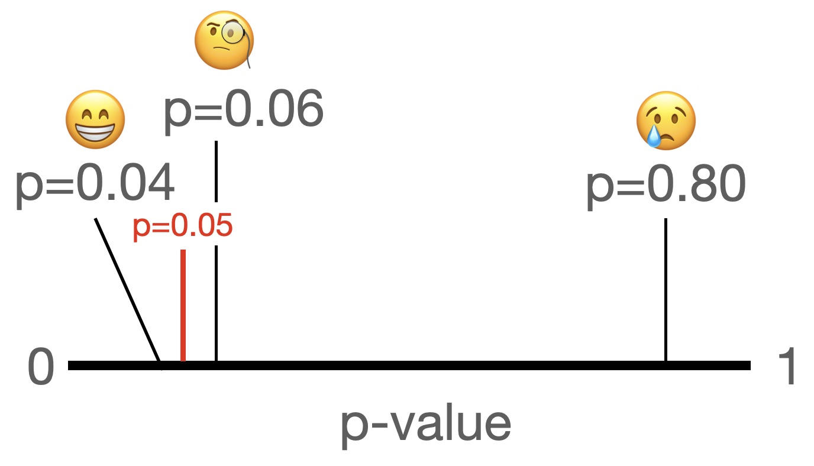

Introduction
Researchers use p-values in the context of hypothesis testing to decide whether to accept or reject the null hypothesis. The routine goes as follows: before running the analysis/the hypothesis test, we decide on a significance level (or “alpha level”, typically 5% or 0.05) below which we decide to reject the null hypothesis. Next, we run the analysis/hypothesis test, and compute the p-value. If the p-value is below the significance level, we reject the null hypothesis: the p-value is “statistically significant”. If the p-value is above the significance level, we “fail to reject” the null hypothesis: the p-value is not statistically significant.
This is illustrated in this nifty pic. If we get a small p-value we are usually happy (no matter how close it is to 0.05), if we get a big p-value we cry (and wonder if our paper will ever get published). But what about p-values that are “hovering” just above 0.05?

In many published papers you will find such a “third kind” of p-value, which is commonly called the “marginally significant” p-value. Alternative names include p-values that are “trending towards significance”, “approaching significance”, “hovering just above the significance level”, or “almost significant”.
Such “marginally significant” p-values, however, simply do not exist. In other words, labeling some p-values as “marginally significant” is a statistical mistake (which is why I use this term between ” “). Let me tell you why.
What do people mean by “marginally significant” p-values?
In the null hypothesis significance testing framework, we use the p-value to decide whether we reject or fail to reject the null. Just like there are only two possible outcomes, there are only two kinds of p-values: significant ones and non-significant ones. Researchers who claim to have found “marginally significant” p-values, thus, essentially claim that there is a some (vaguely/subjectively-defined) subset of non-significant p-values that one could (or perhaps even should!) still interpret as significant.
The practice to label some non-significant p-values as “marginally significant” dates back over 75 years ago. I found a paper published in American Sociological Review in 1946 in which the authors refer to “marginally signficiant” p-values. So, suffice to say, it’s a mistake that people have been making for a very, very long time, and that has become ingrained in statistical practice in many disciplines.
While there is no definition of what a “marginally significant” p-value is supposed to be (because they do not exist in statistical terms), an empirical analysis of psychology studies found that researchers generally seem to define p-values between 0.05 and 0.10 as “marginally significant”, though some researchers have apparently labeled p-values as big as 0.18 as “marginally significant” (see this excellent article for more details). This shows that there is little consistency in what is and isn’t supposed to be “marginally significant” - which makes sense, given that it’s a made-up term that you will for good reason not find in any statistics textbook.
As a side note: my suspicion is that researchers speak of “marginally significant” p-values only if they ran their analysis and the p-value turned out to be “disappointingly big”. In other words, researchers claim that a non-significant p-value is “marginally significant”, so that they can prove themselves right (i.e., they can conclude that their study results are in line with their hypothesis). Thus, researchers use their arbitrary gut feeling to after they conducted the analysis(!) decide that some non-significant p-values are “marginally significant”.
Such researchers commit two statistical crimes and a philosophy-of-science crime. The first statistical crime is that these researchers apparently alter their \alpha-level post-hoc to fit their narrative (a form of confirmation bias and/or p-hacking). Remember: the \alpha-level is determined before you run the analysis, and not just changed afterwards. The second statistical crime is that these researchers make a subjective decision which is not backed by statistical theory and invent a whole new (but undefined) class of potential outcomes of a null hypothesis test (i.e., rejecting the null, failing to reject the null, failing to reject but at the same time still somehow rejecting the null).
The philosophy-of-science crime is that, per Popper, we are supposed to try to falsify our hypotheses as stringently as possible, not come up with ever-fancier ways of proving ourselves right all the time. This misunderstanding has led to a detrimental culture in which researchers’ hypotheses are confirmed all the time (over 90% of the time!), partly because many studies are p-hacked or because the results of hypothesis tests are bent in such ways that they always “confirm” the study hypotheses, even if the data says otherwise. This is dangerous, as it might give students or the next generation of scientists the impression that the point of science is to prove your own preconceived notions to be correct (which is not the point, of course), or that they “made a mistake” if their p-value is greater than 0.05 (which is nonsense, of course!)
Why do people claim to have found “marginally significant” p-values if there is no such thing?
Obviously, I have no idea about what is actually going on in researchers’ heads when they label p-values as “marginally signficant”, but I have two ideas about where this comes from. The first reason lies in poor education in statistics and a confusion between two competing paradigms for interpreting p-values. The second reason is the pressure to publish and “be successful” in academia (success as measured by you getting p <.05), combined with the fact that papers with significant results are more likely to get published than papers that report “null findings”.
Reason 1: Mixing up frameworks for interpreting p-values
Historically, there were two mutually exclusive frameworks to interpret p-values: Fisher’s and Neyman’s & Pearson’s.
Fisher intended for p-values to be interpreted as a continuous measure of the strength of the evidence against the null hypothesis. Under this framework, a p-value of 0.20 is viewed as weaker evidence against the null than a p-value of 0.02.
Neyman & Pearson advocated to classify p-values as either significant or not significant, based on a pre-defined threshold ( \alpha ). If p< \alpha, we reject the null hypothesis. If p > \alpha, we fail to reject the null hypothesis.
Our current way of interpreting p-values is a mix of the two: on the one hand, we apply a decision rule (like in the Neyman-Pearson framework), on the other hand, we use stars to indicate how small a p-value is: one star for p < .05, two stars for 0.05 < p < .01, and two stars for p < .001. Some R functions, like lm(), even use a dot ‘.’ for p-values between 0.1 and 0.05:
summary(lm(formula = y ~ x1 + x2 + x3, data = data))
Coefficients:
Estimate Std. Error t value Pr(>|t|)
(Intercept) 2.95251 0.03297 89.55 <2e-16 ***
x1 -1.50722 0.01847 -81.58 <2e-16 ***
x2 0.81344 0.01808 44.99 <2e-16 ***
x3 -0.82236 0.03950 -20.82 <2e-16 ***
---
Signif. codes: 0 ‘***’ 0.001 ‘**’ 0.01 ‘*’ 0.05 ‘.’ 0.1 ‘ ’ 1Researchers might be confused about the two paradigms and interpret p-values in a more Fisherian fashion, and not evaluate them vis-a-vis a decision threshold. Or rather: researchers do acknowledge that p-values should be below the chosen \alpha-level in order to be interpreted as significant, but if the p-value is - in their subjective perception - “close enough” to 0.05, it is “practically” significant, by only a small margin. A.k.a., the p-value is “marginally significant”.
Unfortunately, such an interpretation makes no sense. None of the three frameworks allow for the existence of “marginally significant” p-values. In Fisher’s framework, there is no hard boundary at which p-values automatically become “significant”. Per Fisher you would conclude that p=0.049 and p=0.051 constitute practically equivalent evidence against the null, but you would not call either “significant” per se. In Neyman-Pearson and our current way of interpreting p-values, we are interested in whether p< \alpha. There is no third kind of p-value that hovers just above our chosen \alpha-level.
Reason 2: Academic publish or perish environment and researchers’ disappointment
Studies in academia take a lot of time to conduct and write up, and oftentimes even longer to get published. Imagine you are a researcher who has spent the last two years (and potentially thousands, if not hundreds of thousands, of euros of tax payers’ money) on a study. You collected the data, ran the analysis, and the p-value of your hypothesis test is 0.06. The horror! How are you gonna get this published??? You know that journals are way more likely to publish papers that have significant p-values than papers reporting “null findings”! You were so sure that you were gonna get a significant p-value!
What do you do?
The best option is, of course, to report the true outcome: the p-value is above the chosen \alpha level, so based on the data that you have, there is insufficient evidence to reject the null. No biggie. Alternatively, you could resort to questionable or downright unethical research practices like p-hacking. Or you could label your result “marginally significant”, implying that “in the right light, if I had a somewhat bigger sample size, if the stars aligned, this would be significant, I swear!”
To be clear, the second option is terrible, don’t do it! The third option is somewhat better, but you should still not do it. For once, you are bending the rules: you shouldn’t willy-nilly change your \alpha-level after running the analysis just because you don’t like the result (that’s not science). Second, you don’t actually know if you would get a “more significant” p-value if you had more data/if the sample size were bigger.
Conclusion
There are no “marginally significant” p-values, under any framework for interpreting p-values. Claiming some effect or p-value is “marginally significant” is wrong: in the null hypothesis testing framework there are just significant and non-significant p-values, there is not even a definition of what a “marginally significant” p-value is supposed to be. Using the term “marginally significant” is disingenuous, and honestly renders the whole affair of using a threshold to determine whether or not to reject the null hypothesis pointless. If you are just going to interpret the results any way you want, why use statistics to begin with?
Either your p-value is above or below the a priori chosen significance level. It’s that simple.
References
If you want to read more about “marginally signficant” p-values, check out these excellent papers:
Gibbs, N. M., & Gibbs, S. V. (2015). Misuse of ‘trend’to describe ‘almost significant’ differences in anaesthesia research. British Journal of Anaesthesia, 115(3), 337-339. Link
Johnson, V. E. (2019). Evidence from marginally significant t statistics. The American Statistician, 73(sup1), 129-134. Link
Lakens, D. (2021). The practical alternative to the p value is the correctly used p value. Perspectives on psychological science, 16(3), 639-648. Link
Pritschet, L., Powell, D., & Horne, Z. (2016). Marginally significant effects as evidence for hypotheses: Changing attitudes over four decades. Psychological science, 27(7), 1036-1042. Link
Reuse
Citation
@online{fang2022,
author = {Fang, Christian},
title = {There Are No “Marginally Significant” p-Values},
date = {2022-11-25},
url = {https://christianfang95.github.io/posts/marginally-significant/},
langid = {en}
}